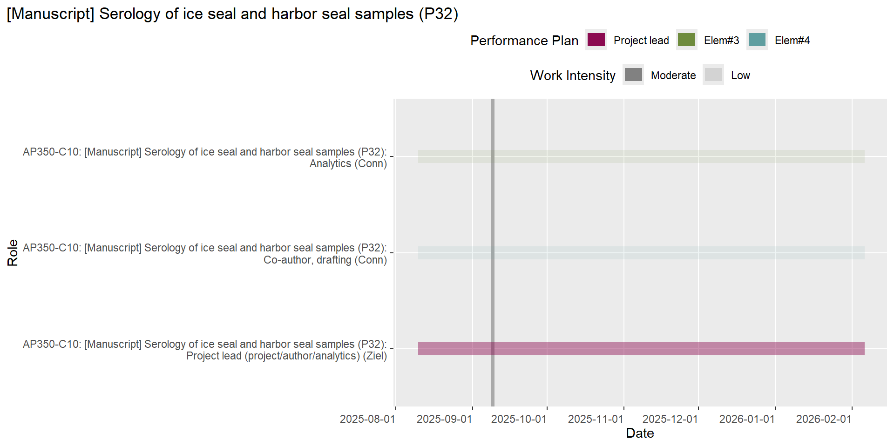
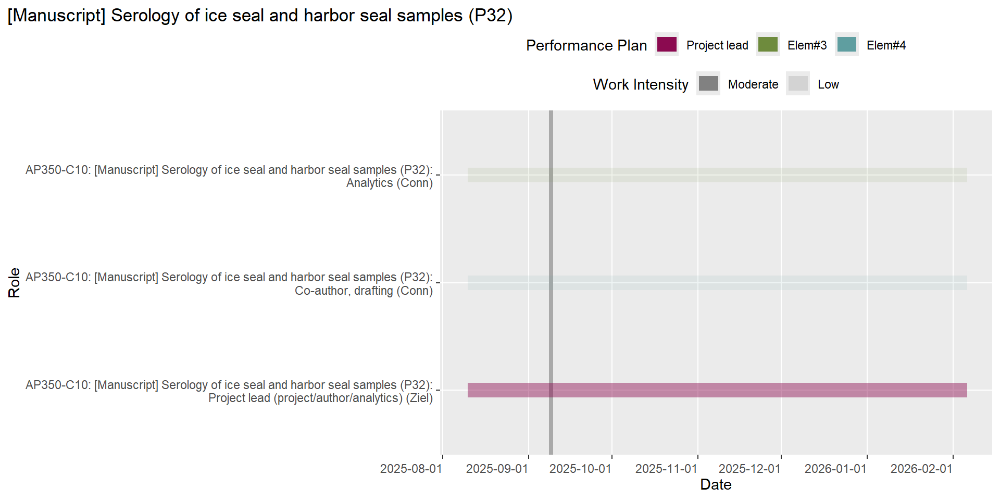
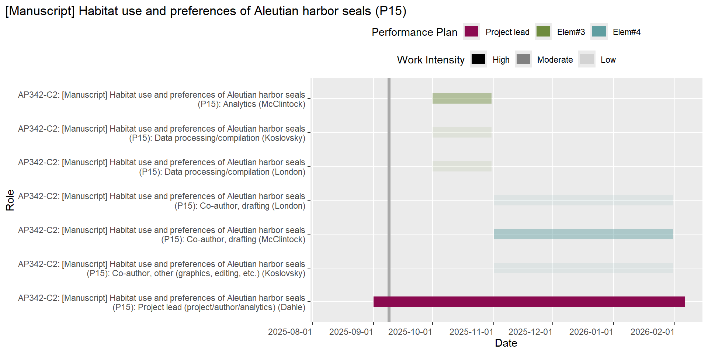
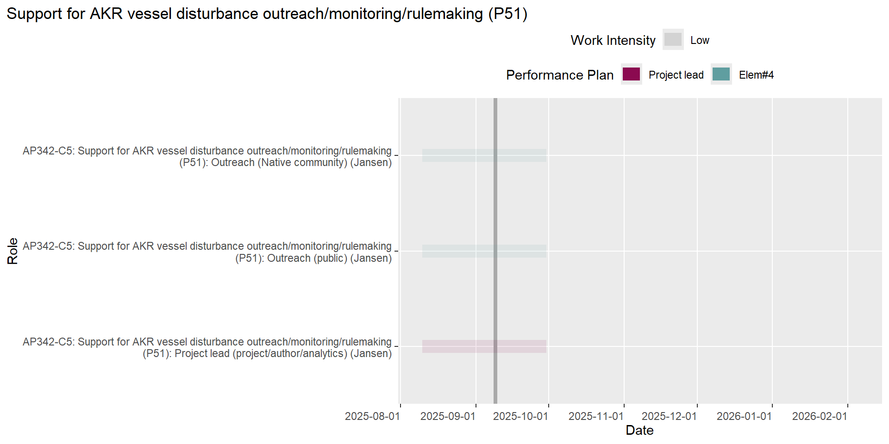
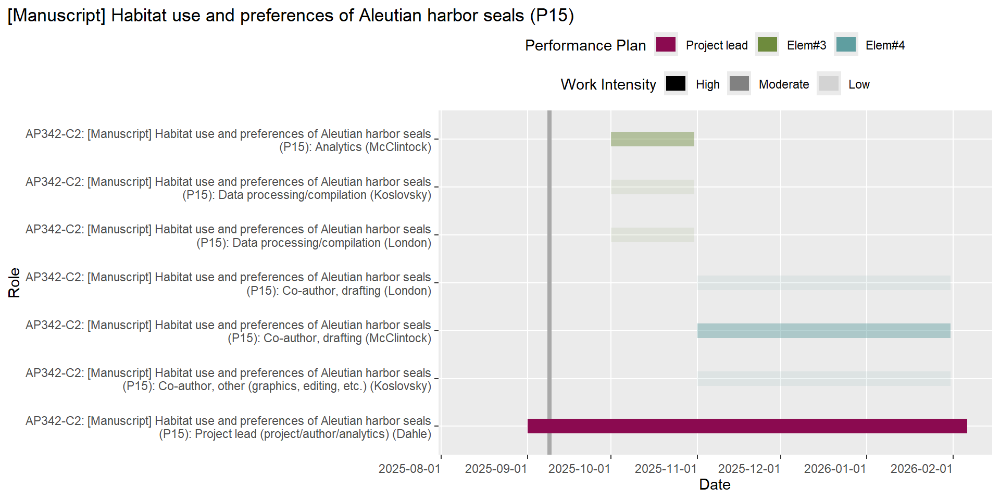
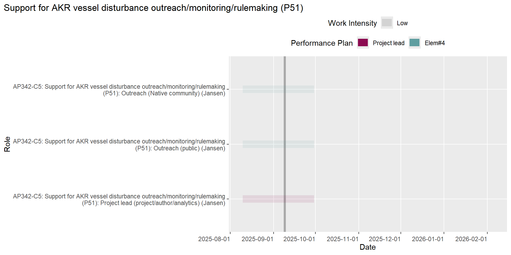
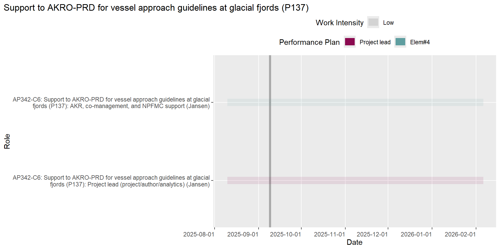
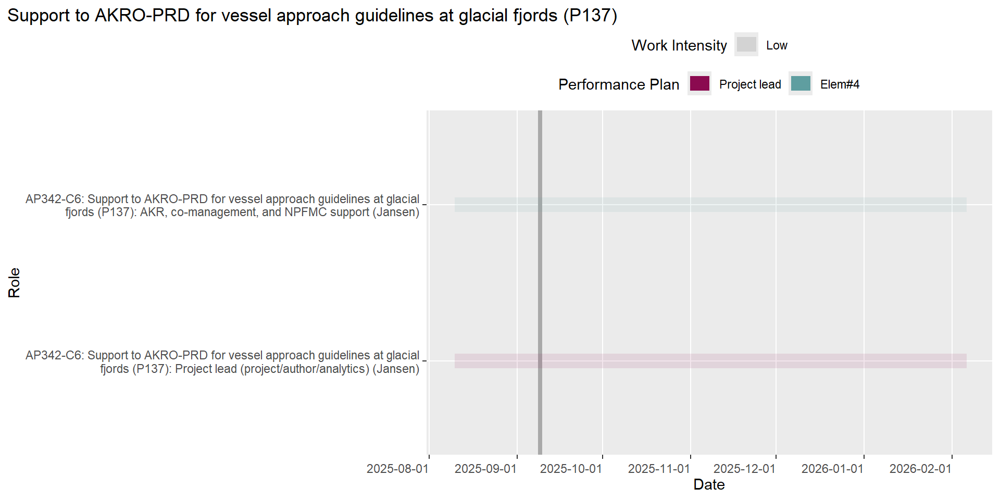
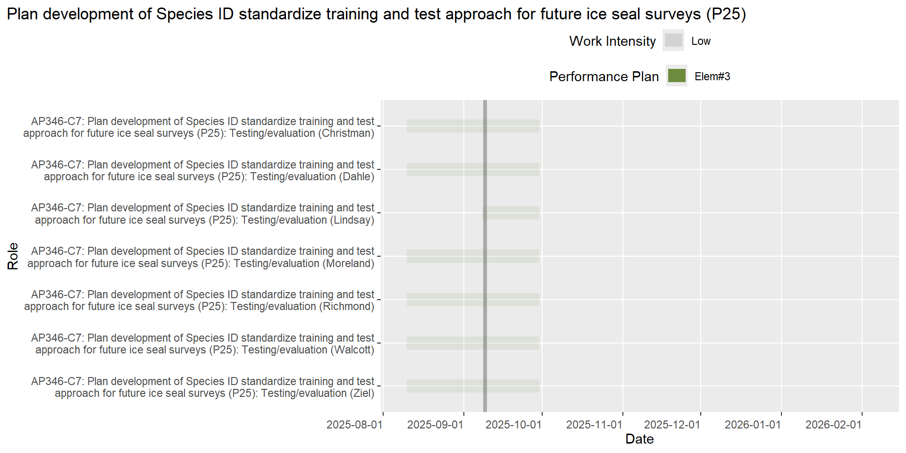

| Activity Plan | Action | Action Lead | Planned End Date |
|---|---|---|---|
| Ice seals (AP 346) | Bering 2024: Run Model on imagery (A530) | Moreland | 2024-09-20 |
| Other (AP 999) | OSI KAMERA: Acquire hardware components (A536) | Moreland | 2024-09-27 |
| Ice seals (AP 346) | Ice Seals 2025: RATS application (A522) | Moreland | 2024-09-27 |
PEP Scheduling Report
This report was generated on 2024-09-17.
Introduction
The information in this report represents the outstanding and upcoming work for PEP staff over the next 180 days. The intent of this information is to help support cross-project planning and communication.
Work Due Soon
The following table lists the actions that will be due within the next 10 days in the DB.
Overdue Work
The following table lists the actions that are overdue in the DB.
| Activity Plan | Action | Action Lead | Planned End Date |
|---|---|---|---|
| Trophic roles (AP 357) | [Manuscript] Spotted seal manuscript submitted to journal (A713) | Boveng | 2024-06-14 |
| Ice seals (AP 346) | CHESS paper submitted (A164) | Boveng | 2024-08-05 |
| Trophic roles (AP 357) | Submit to RPTS (A741) | Boveng | 2024-08-15 |
| Ice seals (AP 346) | U.S. BOSS paper submitted (A165) | Boveng | 2024-08-16 |
| Trophic roles (AP 357) | Submit to journal (A742) | Boveng | 2024-09-06 |
| Ice seals (AP 346) | Revise and resubmit CHESS manuscript (A717) | Boveng | 2024-09-16 |
| Ice seals (AP 346) | Write brief discussion section (A709) | Boveng | 2024-09-16 |
| Ice seals (AP 346) | Develop/Revise energetic modeling - incorporate traveling metrics (A698) | Jansen | 2024-06-01 |
| Ice seals (AP 346) | 2024 Study Design for the Aerial Survey of Harbor Seals in Glacial Fjords (A611) | Jansen | 2024-07-01 |
| Ice seals (AP 346) | Complete manuscript on measuring pup growth by remote sensing (A694) | Jansen | 2024-07-01 |
| Ice seals (AP 346) | Compile disparate data sources from publications, unpublished ADFG and NPS data files, PEP data sources (A685) | Jansen | 2024-08-01 |
| Ice seals (AP 346) | Logistical planning (KAMERA testing, site selection, lodging, GIS support) (A688) | Jansen | 2024-08-01 |
| Ice seals (AP 346) | Complete all assignments in section 2.3 of the 5-year status review for bearded seals (A762) | Jansen | 2024-08-19 |
| Ice seals (AP 346) | Complete surveys of harbor seals in glacial fjords - molting (A613) | Jansen | 2024-08-31 |
| Ice seals (AP 346) | Draft manuscript (A304) | Jansen | 2024-09-15 |
| Other (AP 999) | Convert ArcGIS Desktop to ArcGIS Pro file formats for 2002-2015 glacial HS surveys (A690) | Jansen | 2024-09-15 |
| Ice seals (AP 346) | Bering 2024: Species ID data prep (A674) | Koslovsky | 2024-08-31 |
| Ice seals (AP 346) | Submit ringed seal haul-out ms to RPTS (A637) | Lindsay | 2024-09-15 |
| Trophic roles (AP 357) | Assume leadership role for ringed seal study (A714) | London | 2024-03-01 |
| Other (AP 999) | [Manuscript] Development of a draft publication in support of the pathroutr package (A735) | London | 2024-05-01 |
| Other (AP 999) | Co-author draft publication describing the methods for processing and visualizing empirical cumulative function distribution data (A738) | London | 2024-06-03 |
| Ice seals (AP 346) | Solicit external reviews and provide ms to reviewers (A70) | London | 2024-08-01 |
| Ice seals (AP 346) | Write terrestrial survey methods section (A706) | London | 2024-08-16 |
| Ice seals (AP 346) | Write abundance and trends results (consistent with draft SAR) (A708) | London | 2024-08-16 |
| Ice seals (AP 346) | ‘Haul-out behavior and aerial survey detectability …’ manuscript published (A171) | London | 2024-08-30 |
| Harbor seals (AP 342) | Analysis of habitat use and preferences of AI harbor seals completed (A58) | McClintock | 2024-06-01 |
| Ice seals (AP 346) | species misclassificaiton including AI model output (A382) | McClintock | 2024-06-14 |
| UAS body condition (AP 356) | Estimate body condition of all free-ranging (Dyson) and captive-case seals using UAS measurements (incl 3D) (A340) | McClintock | 2024-07-16 |
| Other (AP 999) | OSI 2024: Prep marine mammal groups across LO on annotation prep, testing (A549) | Moreland | 2024-08-30 |
| Other (AP 999) | OSI 2024: Team hiring (3 Terms, 3 Contractors) (A548) | Moreland | 2024-08-30 |
| Ice seals (AP 346) | Bering 2024: Field Report (A528) | Moreland | 2024-09-01 |
| Ice seals (AP 346) | Knowledge transfer re: current assessment framework and statistical model (A421) | VerHoef | 2023-11-17 |
| Ice seals (AP 346) | Document package/R functions and write vignette(s) (A422) | VerHoef | 2023-11-17 |
| Ice seals (AP 346) | Submit journal article and deposit pre-print (A74) | VerHoef | 2024-04-15 |
| Ice seals (AP 346) | Calculate estimates of abundance and trend by stock; provide results to co-authors (A420) | VerHoef | 2024-04-15 |
| Ice seals (AP 346) | Write analytical methods section (A707) | VerHoef | 2024-05-01 |
| Ice seals (AP 346) | Complete all assignments in section 2.3 of the 5-year status review for bearded seals (A765) | Walcott | 2024-08-19 |
Planned Work by Action Lead
For actions where there is no start date assigned, an anticipated start date of 15 days before the planned end date has been estimated. Today’s date is shown as a grey vertical line on the figure.
Boveng

Brady

Cameron

Christman

Conn

Dahle

Jansen

Koslovsky

Lindsay

London

McClintock

Moreland

Richmond

VerHoef

Walcott

Ziel

Planned Work by Project
For actions where there is no start date assigned, an anticipated start date of 15 days before the planned end date has been estimated. Today’s date is shown as a grey vertical line on the figure.
Diet and physiology (AP 350)
Collaborate with partners on analyses of samples collected in the field (C10)


 

Harbor seals (AP 342)
Aleutian Islands harbor seal ecology (C2)


Harbor seal reporting (C17)

Scientific assessment and support to stakeholders for management and co-management of Alaskan harbor seals (C6)
 

Ice seals (AP 346)
Abundance and trend analysis for harbor seal stocks (C3)


Aerial surveys of harbor seals in Alaska (C1)


 

Aerial surveys of ice seals and polar bears (C7)


Scientific assessment and support to stakeholders for management and co-management of Alaskan ice seals (C9)



Vessel disturbance of glacial harbor seals (C5)


Vessel-based tagging and sampling for haul-out, health, condition, diet (C8)


Other (AP 999)
Modernizing MML stock assessment workflows (C26)

Open science/software (C25)


Optics Strategic Initiative (C23)


Program data management (C15)


Walcott work for AEP (C22)


Toolbox (AP 354)
Integrating diverse data sources to determine seasonal density distributions of protected species (C12)


Trophic roles (AP 357)
Analysis for Trophic Roles of Ice Seals RWP project (C11)

Integrating seal energy requirements and diet composition (C21)

UAS body condition (AP 356)
Phase III: UAS field tests/data collection and analysis/reporting (C14)


USPAI (AP 355)
Uncrewed Surveys of Pinnipeds in the Aleutian Islands (C13)


Manuscripts
The following tables list the actions associated with each planned manuscript.
Abundance, Trends, and Distribution of Harbor Seals in the Pribilof Islands (P78)
| Action | Action Lead | Planned End Date | Status |
|---|---|---|---|
| QA/QC Prib counts in DB (A649) | Richmond | 2024-03-25 | Completed |
| Circulate draft manuscript to co-authors (A564) | Richmond | 2024-09-30 | In progress |
| Update all sections (A650) | Richmond | 2024-09-30 | Not yet started |
Adult bearded seal foraging habitat selection (P131)
| Action | Action Lead | Planned End Date | Status |
|---|---|---|---|
| Review Lovvorn’s comments and McClintock Responses - Prepare Draft (A629) | Cameron | 2025-02-01 | Not yet started |
| Send Initial draft to Boveng, McClintock and Lovvorn for initial comments (A630) | Cameron | 2025-04-30 | Awaiting dependency |
| Revise and send draft to other coauthors for comments (A631) | Cameron | 2025-07-30 | Awaiting dependency |
| Make final revisions and submit to peer-reviewed journal (A632) | Cameron | 2025-09-27 | Awaiting dependency |
AK Harbor Seals Abundance & Trends (P11)
| Action | Action Lead | Planned End Date | Status |
|---|---|---|---|
| Write analytical methods section (A707) | VerHoef | 2024-05-01 | In progress |
| Solicit external reviews and provide ms to reviewers (A70) | London | 2024-08-01 | Not yet started |
| Write abundance and trends results (consistent with draft SAR) (A708) | London | 2024-08-16 | In progress |
| Write terrestrial survey methods section (A706) | London | 2024-08-16 | In progress |
| Write brief discussion section (A709) | Boveng | 2024-09-16 | Awaiting dependency |
| Incorporate external review comments and submit to RPTS; provide to AKSRG (A71) | Boveng | 2024-09-30 | Awaiting dependency |
| Publish AFSC Tech Memo (A710) | Boveng | 2024-10-15 | Awaiting dependency |
Bearded seal “at sea” distributions (P37)
| Action | Action Lead | Planned End Date | Status |
|---|---|---|---|
| Develop and test theoretical modeling framework (A206) | Conn | 2023-03-31 | Completed |
| Analyze beard seal abundance using close-kin mark-recapture (A205) | Conn | 2024-01-15 | Completed |
| Submit bearded seal close-kin mark-recapture paper (A558) | Conn | 2024-04-30 | Completed |
| Analysis of bearded seal “at sea” distributions completed (A211) | Conn | 2024-10-31 | In progress |
| Draft journal article (A207) | Conn | 2024-12-31 | In progress |
| Submit to journal (A208) | Conn | 2024-12-31 | Not yet started |
| Revise and resubmit (A209) | Conn | 2025-03-31 | Not yet started |
| Archive data and make accessible to regional office (A210) | Koslovsky | 2025-05-31 | Awaiting dependency |
| Journal article published (A212) | Conn | 2025-05-31 | Not yet started |
BOSS (Russia) (P141)
| Action | Action Lead | Planned End Date | Status |
|---|---|---|---|
| Russian BOSS paper submitted (A166) | Conn | 2025-04-01 | Awaiting dependency |
BOSS (U.S.) (P140)
| Action | Action Lead | Planned End Date | Status |
|---|---|---|---|
| U.S. BOSS paper submitted (A165) | Boveng | 2024-08-16 | In progress |
| Revise and resubmit U.S. BOSS manuscript (A168) | Boveng | 2024-11-26 | Not yet started |
| Archive results of U.S. BOSS (A719) | Koslovsky | 2025-01-31 | Awaiting dependency |
ChESS (P142)
| Action | Action Lead | Planned End Date | Status |
|---|---|---|---|
| CHESS paper submitted (A164) | Boveng | 2024-08-05 | In progress |
| Revise and resubmit CHESS manuscript (A717) | Boveng | 2024-09-16 | In progress |
| Archive results of ChESS (A720) | Koslovsky | 2025-01-31 | Awaiting dependency |
CKMR (P144)
| Action | Action Lead | Planned End Date | Status |
|---|---|---|---|
| Bearded seal CKMR analysis finalized (A162) | Conn | 2022-06-01 | Completed |
| CKMR paper submitted (A167) | Conn | 2024-04-30 | Completed |
| Archive results of CKMR (A721) | Koslovsky | 2025-01-31 | Awaiting dependency |
Food habits of ribbon and spotted seals (P139)
| Action | Action Lead | Planned End Date | Status |
|---|---|---|---|
| Review analyses in the draft; update if needed (A702) | Ziel | 2024-09-30 | In progress |
| Revise, edit, complete draft (A701) | Ziel | 2024-09-30 | In progress |
| Submit manuscript for publication (A703) | Ziel | 2024-09-30 | Not yet started |
Habitat use and preferences of AI harbor seals (P15)
| Action | Action Lead | Planned End Date | Status |
|---|---|---|---|
| Analysis of habitat use and preferences of AI harbor seals completed (A58) | McClintock | 2024-06-01 | In progress |
| Manuscript drafted (A59) | McClintock | 2024-09-30 | Not yet started |
Haul-out behavior (P145)
| Action | Action Lead | Planned End Date | Status |
|---|---|---|---|
| ‘Haul-out behavior and aerial survey detectability …’ manuscript published (A171) | London | 2024-08-30 | In progress |
| Archive results of Haul-out behavior (A722) | Koslovsky | 2025-01-31 | Awaiting dependency |
Hematology and dive characteristics of ribbon and spotted seals (P92)
| Action | Action Lead | Planned End Date | Status |
|---|---|---|---|
| Review, edit, write dive characteristics sections of the draft (A472) | London | 2024-12-15 | Awaiting dependency |
| Revise, edit, complete draft (A471) | Ziel | 2024-12-15 | Awaiting dependency |
| Review analyses in the draft, talk with Paul (A758) | Ziel | 2024-12-30 | In progress |
| Review analyses in the draft; update if needed (A474) | Conn | 2025-01-15 | Awaiting dependency |
| Submit manuscript for publication (A473) | Ziel | 2025-03-30 | Not yet started |
JoBSS (P143)
| Action | Action Lead | Planned End Date | Status |
|---|---|---|---|
| JoBSS analysis finalized (A391) | Conn | 2023-11-01 | Completed |
| JoBSS paper - Draft Completed (A718) | Moreland | 2024-09-30 | In progress |
| JoBSS paper submitted (A726) | Moreland | 2025-01-30 | Not yet started |
| Archive results of JoBSS (A723) | Koslovsky | 2025-01-31 | Not yet started |
Joint Beaufort Sea Survey_2021 - Disturbance study (P26)
| Action | Action Lead | Planned End Date | Status |
|---|---|---|---|
| Mapping and assessment of target animal locations (A139) | Walcott | 2022-06-10 | Completed |
| Manuscript outline (A312) | Walcott | 2024-09-28 | In progress |
| Literature review (A141) | Walcott | 2024-09-30 | In progress |
| Creation of figures and tables (A142) | Walcott | 2024-10-31 | In progress |
| Submit for preprint (A137) | Walcott | 2024-11-01 | Not yet started |
Mov’t ecology, dive behavior, and habitat use for ribbon and spotted seals (P31)
| Action | Action Lead | Planned End Date | Status |
|---|---|---|---|
| Develop analytical framework (A173) | London | 2023-02-01 | Cancelled |
| Establish collaborative framework (e.g. Github repo) (A174) | London | 2023-03-01 | Cancelled |
| Data assembly (A175) | London | 2023-05-30 | Cancelled |
| Draft analysis & share results (A176) | London | 2023-07-01 | Cancelled |
| Draft descriptive manuscript on ribbon seal spatial use and diving (A177) | London | 2023-09-01 | Cancelled |
| Draft descriptive manuscript on mov’t ecology of ribbon and spotted seals w/ potential linkage to CEFI objectives (A716) | London | 2024-09-30 | In progress |
Multispectral Aerial Survey Methods (P128)
| Action | Action Lead | Planned End Date | Status |
|---|---|---|---|
| [Manuscript] Multispectral Aerial Survey Methods: Draft text (A621) | Moreland | 2024-09-30 | In progress |
Pup Growth and Productivity of Glacial Harbor Seals: Effect of Vessel Disturbance (P138)
| Action | Action Lead | Planned End Date | Status |
|---|---|---|---|
| Complete manuscript on measuring pup growth by remote sensing (A694) | Jansen | 2024-07-01 | In progress |
Pup haul out behavior and energetic modeling (P19)
| Action | Action Lead | Planned End Date | Status |
|---|---|---|---|
| AMSS oral presentation (A682) | Jansen | 2024-01-30 | Completed |
| Develop/Revise energetic modeling - incorporate traveling metrics (A698) | Jansen | 2024-06-01 | In progress |
| Draft manuscript (A304) | Jansen | 2024-09-15 | Not yet started |
Pup movements and telemetry analysis (P18)
| Action | Action Lead | Planned End Date | Status |
|---|---|---|---|
| Draft manuscript (A94) | Jansen | 2025-05-01 | Not yet started |
Ringed seal haul-out & emergence (P133)
| Action | Action Lead | Planned End Date | Status |
|---|---|---|---|
| Submit ringed seal haul-out ms to RPTS (A637) | Lindsay | 2024-09-15 | In progress |
| Submit ringed seal haul-out ms to journal (A638) | Lindsay | 2024-09-30 | Awaiting dependency |
Ringed seal & polar bear demographic modeling (P134)
| Action | Action Lead | Planned End Date | Status |
|---|---|---|---|
| Modify & join existing ringed seal & polar bear demographic models (A643) | Lindsay | 2024-10-15 | In progress |
| Obtain & process snow and sea-ice predictions from GCM(s) (A641) | Lindsay | 2024-10-15 | Not yet started |
| Hindcast & calibrate joint ringed seal/ polar bear demographic model (A639) | Lindsay | 2024-10-30 | Awaiting dependency |
| Perform sensitivity analyses of joint ringed seal/ polar bear demographic model (A642) | Lindsay | 2024-11-11 | Awaiting dependency |
| Forecast joint ringed seal/ polar bear demographic model (A640) | Lindsay | 2024-11-14 | Awaiting dependency |
| Share draft ringed seal & polar bear demographic modeling ms with co-authors (A644) | Lindsay | 2024-12-16 | Awaiting dependency |
| Complete revisions & share revised ringed seal & polar bear demographic modeling ms with co-authors (round 1) (A645) | Lindsay | 2025-01-31 | Awaiting dependency |
| Complete revisions & share revised ringed seal & polar bear demographic modeling ms with co-authors (round 2) (A648) | Lindsay | 2025-02-28 | Awaiting dependency |
| Submit ringed seal & polar bear demographic modeling ms to RPTS (A646) | Lindsay | 2025-03-17 | Awaiting dependency |
| Submit ringed seal & polar bear demographic modeling ms to journal (A647) | Lindsay | 2025-03-31 | Awaiting dependency |
Stable isotope analysis of ice seal and harbor seal samples (P33)
| Action | Action Lead | Planned End Date | Status |
|---|---|---|---|
| Obtain stable isotope results from analyses from 2022 contract (option year 1) from Lorrie (A779) | Ziel | 2024-06-19 | Completed |
| Complete stable isotope mixing model analyses for Aleutian harbor seals and Bering Sea ice seals (A182) | London | 2024-09-30 | Not yet started |
| Draft paper - Aleutian harbor seals stable isotope analysis (A183) | Ziel | 2024-09-30 | Not yet started |
| Draft paper - Aleutian harbor seals stable isotope analysis (A284) | London | 2024-09-30 | Not yet started |
| Obtain stable isotope results from analyses from 2022 contract (option year 2) from Lorrie (A780) | Ziel | 2025-09-01 | In progress |
Statistical Methodology for Assessment of Alaska Harbor Seals (P50)
| Action | Action Lead | Planned End Date | Status |
|---|---|---|---|
| Submit journal article and deposit pre-print (A74) | VerHoef | 2024-04-15 | In progress |
| Journal article published (A75) | VerHoef | 2024-09-30 | Awaiting dependency |
Steller sea lion “at sea” distributions (P36)
| Action | Action Lead | Planned End Date | Status |
|---|---|---|---|
| Meet with regional office to update on progress (A196) | Conn | 2023-06-01 | Completed |
| Update analysis with information on haul-out and rookery sizes (A349) | Conn | 2024-09-30 | In progress |
| Archive data and make accessible to AKRO (A202) | Koslovsky | 2025-01-31 | Awaiting dependency |
TechMemo: Synthesis of BOSS (U.S. & Russia), ChESS, JoBBS abundance estimates (P146)
| Action | Action Lead | Planned End Date | Status |
|---|---|---|---|
| Prepare draft of synthesis of ice seal abundance estimates as a Tech Memo (A724) | Boveng | 2025-02-01 | Not yet started |
| Submit synthesis of ice seal abundance estimates as a Tech Memo to RPTS (A725) | Boveng | 2025-06-30 | Not yet started |
The origins and status of harbor seals in Iliamna Lake (P88)
| Action | Action Lead | Planned End Date | Status |
|---|---|---|---|
| Project planning meeting with contributors (A448) | Boveng | 2025-01-31 | Cancelled |
| Circulate draft manuscript to co-authors (A449) | Boveng | 2025-08-31 | Cancelled |
Trophic roles of spotted seals in Alaskan Arctic marine ecosystems (P153)
| Action | Action Lead | Planned End Date | Status |
|---|---|---|---|
| Submit to RPTS (A741) | Boveng | 2024-08-15 | In progress |
| Submit to journal (A742) | Boveng | 2024-09-06 | Not yet started |
| Revise and resubmit (A743) | Boveng | 2024-10-15 | Not yet started |
| Finalize publication (A744) | Boveng | 2024-12-02 | Awaiting dependency |
Winter site fidelity of male bearded seals in the Bering Sea (P58)
| Action | Action Lead | Planned End Date | Status |
|---|---|---|---|
| Project planning meeting (A294) | Boveng | 2023-01-31 | Completed |
| Create data file from PEP telemetry database query (A295) | Koslovsky | 2023-02-28 | Completed |
| Literature review (A576) | Richmond | 2024-12-31 | In progress |
| create graphics depicting repeated use of wintering sites by male bearded seals (A296) | Richmond | 2025-02-28 | Not yet started |
| Draft ms to co-authors; comments & edits returned (A402) | Boveng | 2025-06-01 | Not yet started |
| Final draft manuscript text (A297) | Boveng | 2025-08-15 | Not yet started |
| Submit to RPTS (A404) | Boveng | 2025-08-30 | Not yet started |
| Submit to journal (A411) | Boveng | 2025-09-15 | Not yet started |
Reports
The following tables list the actions associated with each planned report.
Complete an ESA 5-year status review for bearded seals (P63)
| Action | Action Lead | Planned End Date | Status |
|---|---|---|---|
| Initiate Development: Set meetings, Convert 5yr ringed seal review Google Doc to template for bearded seal Template (A625) | Cameron | 2024-05-08 | Completed |
| Complete all assignments in section 2.3 of the 5-year status review for bearded seals (A762) | Jansen | 2024-08-19 | In progress |
| Complete all assignments in section 2.3 of the 5-year status review for bearded seals (A765) | Walcott | 2024-08-19 | In progress |
| Complete all assigned sections in the 5-year status review for bearded seals (A357) | Dahle | 2024-10-09 | In progress |
| Complete all assigned sections in the 5-year status review for bearded seals (A358) | Jansen | 2024-10-09 | In progress |
| Complete all assigned sections in the 5-year status review for bearded seals (A359) | Ziel | 2024-10-09 | In progress |
| Complete all assigned sections in the 5-year status review for bearded seals (A627) | Lindsay | 2024-10-09 | In progress |
| PEP authors review and assemble complete document (A361) | Cameron | 2024-10-29 | Awaiting dependency |
| Scan document for references, proper Zotero coding, and for acronyms & terms to be included in GLOSSARY; add definitions for all terms (A624) | Walcott | 2024-11-07 | Awaiting dependency |
| Scan document for references, proper Zotero coding, and for acronyms & terms to be included in GLOSSARY; add definitions for all terms (A700) | Richmond | 2024-11-07 | Awaiting dependency |
| Format and submit to AKRO (A362) | Cameron | 2024-11-09 | Awaiting dependency |
Complete an ESA 5-year status review for ringed seals (P56)
| Action | Action Lead | Planned End Date | Status |
|---|---|---|---|
| Respond to AKRO review comments (A715) | Boveng | 2024-01-31 | Completed |